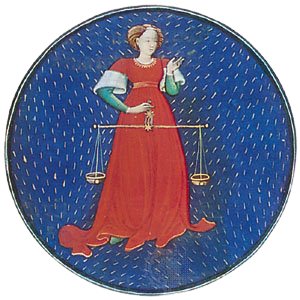

|

|
Libra, (Latin: “Balance”) in astronomy,
zodiacal constellation in the southern
sky lying between Scorpius and Virgo,
at about 15 hours 30 minutes right
ascension and 15° south declination.
Its stars are faint; the brightest star,
Zubeneschamali (Arabic for “northern
claw,” as it was earlier regarded as part
of Scorpius; also called Beta Librae), has
a magnitude of 2.6. In astrology, Libra is
the seventh sign of the zodiac, considered
as governing the period from about
September 22 to about October 23. It is
represented by a woman (sometimes
identified with Astraea, the Roman goddess
of justice), holding a balance scale or by the
balance alone.
|